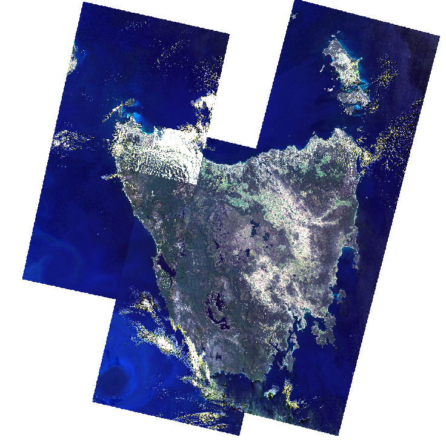
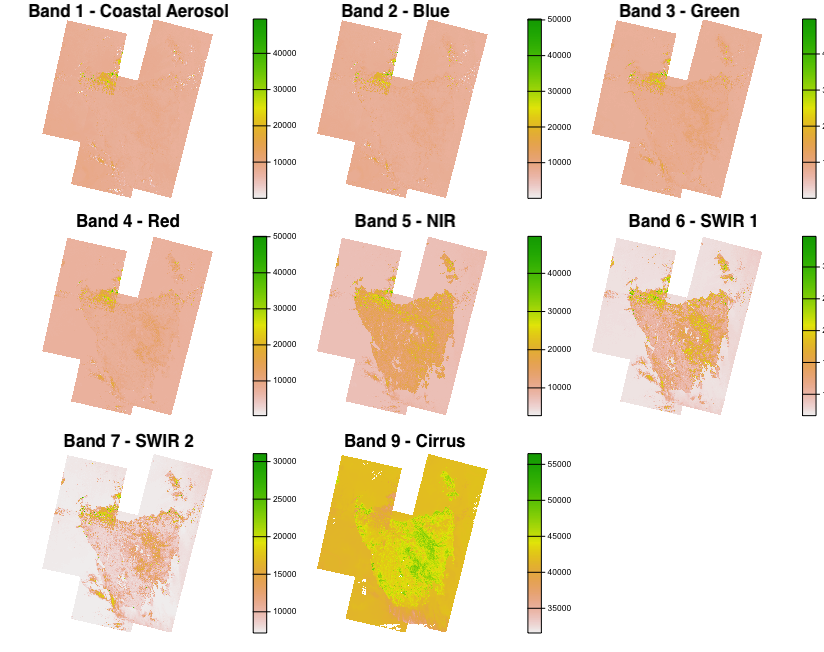
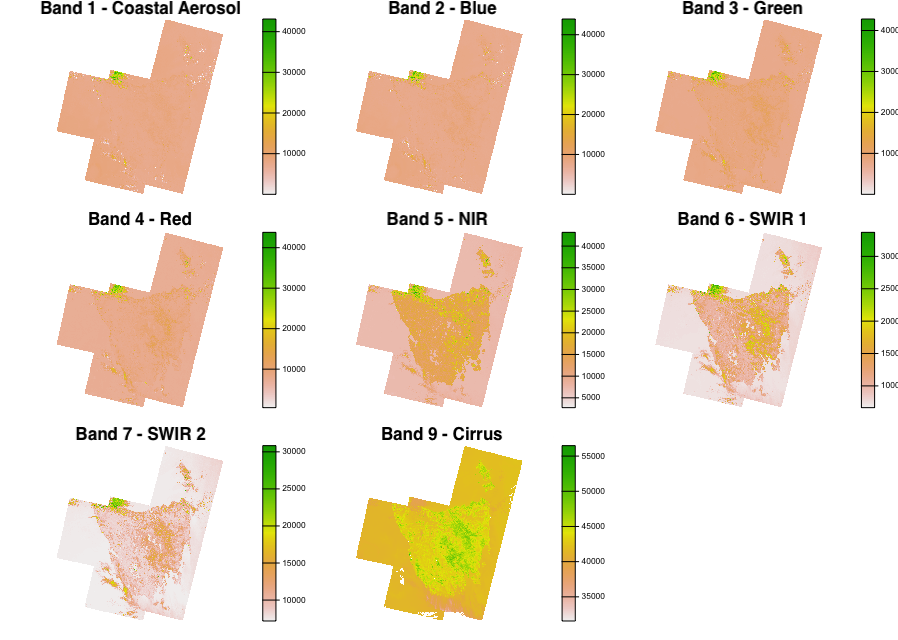
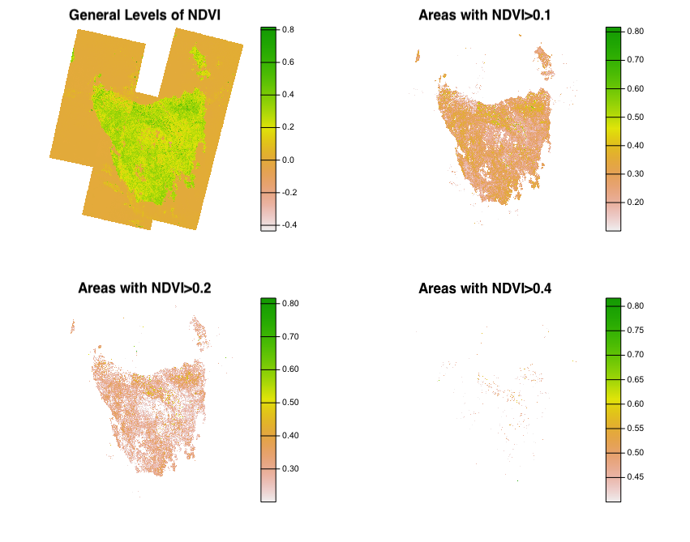
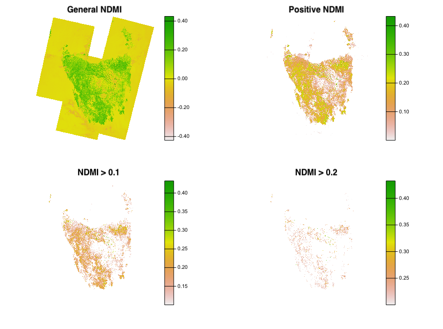
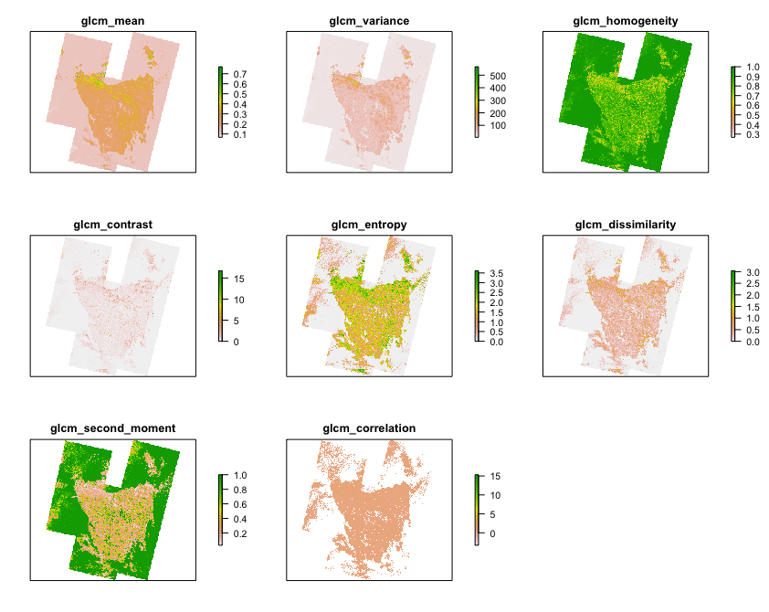
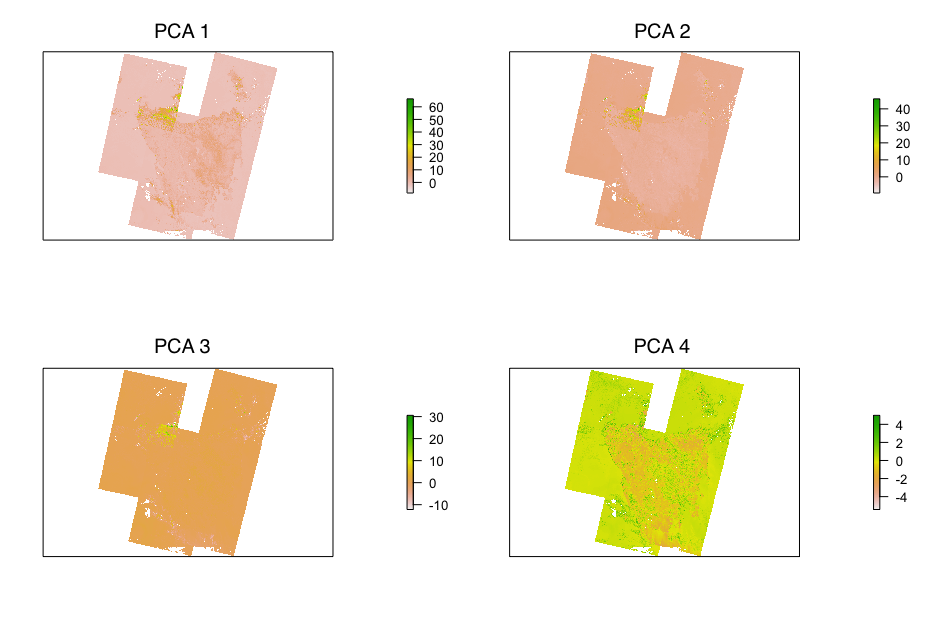

{kind=link}
| Component 1 | Component 2 | Component 3 | Component 4 | Component 5 | Component 6 | Component 7 | Component 8 | Component 9 | |
|---|---|---|---|---|---|---|---|---|---|
| Standard deviation | 2.5547583 | 1.1690118 | 0.7963765 | 0.5411714 | 0.3271707 | 0.2268870 | 0.0996739 | 0.0921788 | 0.0508813 |
| Proportion of Variance | 0.7251989 | 0.1518432 | 0.0704684 | 0.0325407 | 0.0118934 | 0.0057197 | 0.0011039 | 0.0009441 | 0.0002877 |
| Cumulative Proportion | 0.7251989 | 0.8770421 | 0.9475105 | 0.9800512 | 0.9919446 | 0.9976644 | 0.9987682 | 0.9997123 | 1.0000000 |
Atmospheric Corrections
In this section we focus on Atmospheric correction! This concept is primordial in correctly interpreting the information provided by satellite images in remote sensing. Various elements can create interpretative issues when analysing these images. The radiance received by the satellite is affected the atmospheres scattering, absorption and refraction of light ( Chavez (1996) )
More precisely, our blog entry today will focus on Landsat 8-9 images of Tasmania. Known for being home to the Tasmania Devil which inspired TAZ in the Looney Tunes Universe, Tasmania is of great environmental importance as it is home to a highly developed microcosm with many endemic plants and species that are unique to that area!
Collecting and merging raster images
For this topic, we decide to analyse the whole of Tasmania. Tasmania is has a landmass of over \(68,000 km^2\). A cloud-clear Landsat Image provides overview on approximately \(34,000km^2\) which means that several captures are necessary. Below is an example of a single image over Tasmania, not enough to be representative of the island as a whole. We need to merge several to create a mosaic. Below we use these 7 panes and put them in a mosaic to create a full RBG view of the Island

We took our images from the USGS and used 7 images in total to cover the whole Island. Of these 7 images, 5 came from Landsat 8 and 2 from Landsat 9. Six of the frames were taken between 24th and 28th of January 2022 and one of them was on the 12th of February 2022. We deemed this temporal difference between images not to be significant but we will be analysing the implications further down.

The bands presented here are at 30m resolution. We omit bands 8 (15m), 10 and 11 (100m) as they have different resolutions (refresher table available here). As the information that spectral bands can provide is high, we can use this to get additional insight on our area of study!
Differences between panes
We note that in our initial image, with the 7 panes, there are temporal differences between when each of them were captured, especially one of them taken more than two weeks later (top left). Not only is it taken later, but we also see the strong presence of clouds (i.e. Band 9 top left and visually with the white areas). Below we have the same mosaic but instead keep only 6 panes which were taken within 4 days of each other:

We add this difference for visibility but also to show that time and cloud cover are very important aspect and can influence image results. In our case, even if the differences are visible in the later image, we will continue will all 7 in our analysis below to get a full idea of the island, even if the results may not be perfectly precise.
Using Vegetation and Moisture Indexes to learn more about Tasmania
As Tasmania is known as an important microcosm, home to many endemic species both of animals and vegetation, we look at at vegetation measures. Using NIR and Red bands in L-8/9 we can understand vegetation intensity across the island. The below panel illustrates which areas meet different thresholds of NDVI:

We see that a great proportion of Tasmanian Landmass has positive levels of NDVI, which would indicate that there are little to no areas of barren rocky or sandy surfaces (US Geological Society). This is not surprising as over 50% of Tasmania’s land area has some form of reservation classification.
To continue understanding the Tasmania’s composition, we also focus on the moisture index. NDMI is used to determine vegetation water content and is measured similarly to NDVI. Below we have a similar breakdown of the different areas across various thresholds:

As expected, the land areas have overwhelmingly positive values! In addition we have to keep in mind the temporal aspect as these observations were taken in the southern Hemisphere summer which means these values are likely to be higher during the traditionally wetter seasons of June, July and August (source)
Understanding Image information
Texture
We use filtering on our images to reduce the computational weight of the image and make it easier for processing in the below texture analysis.
We use the Gray level co-occurrence matrix (GLCM) to understand how different regions are characterised. It considers spatial relationships between pixels simultaneously to understand how the textures compare between areas of the mosaic.

With this panel, we are able to start visualising different terrain characteristics. The different categories indicate what characteristics are focused on between analysed neighbouring pixels.
For example, the ‘contrast’ pane emphasises areas with high contrast between neighbouring pixels, which in this case has value in the upper center part of the island. Which makes sense as Hobart, the capital of Tasmania, is in that area and there would be contrast between urban and forests for example. As for another value such as ‘homogeneity’, the values are higher towards the center of the island which is the least urbanised, thus having most similar surroundings, mainly covered by forests ( Hall-Beyer (2017) and additional breakdowns of the characteristics starting page 29).
Finding Clusters and common characteristics
We now proceed to look at Principal Component Analysis (PCA) which aims to reduce the dimensionality in texture bands and provide easier understanding of the environmental information, whilst preserving most of the information. So it has the benefit of providing clear overviews of changes, such as variations of terrain characteristics.
As the above table provides information regarding numerical information, we can get a better understanding of how spectral data of Tasmanian L-8 imagery (during the summer season or 2022) varies. We identify that over 98% of the spectral variance is contained within the first 4 clusters. Using PCA in remote sensing provides several advantages as it allows to visualise the changes that occurred in a certain area ( Munyati (2004) ) and reduce the dimensionality of the spectral data ( Balázs et al. (2018) ). This may be difficult to interpret numerically, therefore we include visualisation of the top 4 components in the image below:

Personal Reflection
The principal issue encountered for this analysis came in using the 'Rtools' and 'RStoolbox' packages. Indeed, different dependencies and technical differences (Mac vs Windows and R version 4.2.2 and 4.2.1) made using them difficult, specifically the 'rasterPCA' function.
This allowed me to gain better understanding of library development as I had to use the source code for the specific PCA function (master code here) and then download the appropriate objects as internal functions (here). We thank Benjamin Leutner for developing the packages and making the source code available. With this difficulty, I was able to dive deeper into the working of computing for corrections in Remote Sensing.
As for corrections in general, I was unfamiliar with this topic before but found it rewarding and insightful. The amount of information possible to extract from raw spectral data is impressive and is something I want to explore further. Although we only used NDVI and NDMI in this analysis, we have more options which could include:
SAVI - Soil Adjusted Vegetation Index proposed by Huete (1988) (and variations by Qi et al. (1994) ) which aims to minimise the soil influences on canopy spectra
GCI - Green Chlorophyll Index - NIR and Green bands and calculated as follows for L-8: \(GCI = NIR/(Green-1) = B5/(B4-1)\)
ARVI - Atmospherically Resistant Vegetation Index - has NIR, Red and Blue Bands in the equation ( Kaufman and Tanre (1992) ) and better accounts for small size aerosol particles.
GNDVI - Green Normalised Vegetation Index - has NIR and Green bands in equation (Ghimire, Lei, and Juan (2020) )
Also interesting to see how the democratisation of data availability in remote sensing paired with technological has allowed for facilitated research on earth’s surface (Schulte to Bühne and Pettorelli (2018) ) . For example, the Landsat programme which has been running since 1972 gives the ability to see how methods change over time ( Yuan, O’Neil, and Torrejon (2020) ). These technological advances are important in correction with examples such as machine learning using Convolutional Neural Networks (CNN) to automatically identify the presence of clouds in images ( Segal-Rozenhaimer et al. (2020) ).
Finally, the same is true for texture analysis. In our Tasmanian Analysis, we only focused on grey level co-occurrence matrix to use in the process of land use/cover classification. We could aim to use other methods in future analyses such as Laplace filters and granulometric analysis ( Kupidura (2019) )